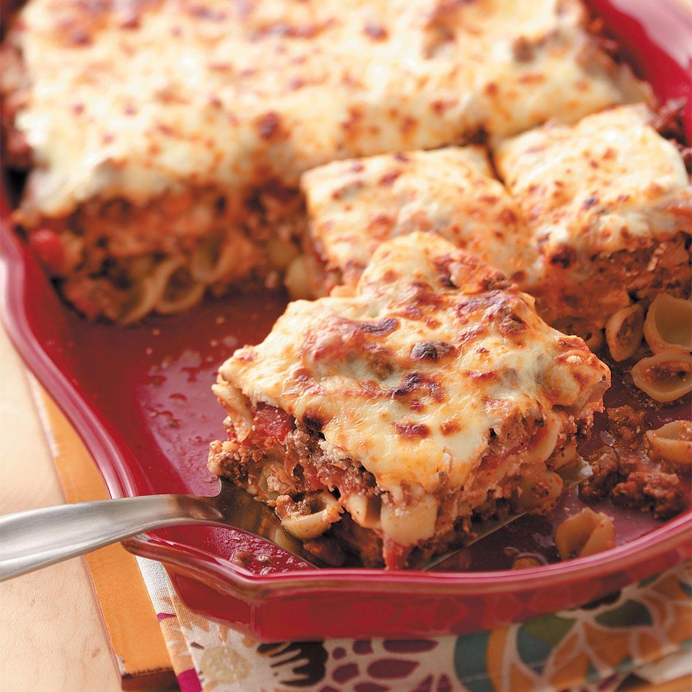

Lasagna-Stuffed-Shell Recipe
Jumbo pasta shells are stuffed with a lasagna-inspired blend of ricotta, mozzarella, spinach, and ground beef in this family-friendly recipe.

Ingredients
- ground beef
- salt and ground black pepper
- olive oil
- chopped onion
- tomato paste
- dried oregano
- tomato sauce
- jumbo pasta shells
- garlic, thinly sliced
- milk ricotta cheese
- shredded mozzarella cheese
- package frozen chopped spinach
- fresh basil
- 1 medium lemon, zested and juiced
- Grated Parmesan cheese
Procedures
- Heat a large skillet over medium-high heat; add 1/2 of the ground beef with a big pinch of salt and pepper and cook until the beef is seared and crumbly, about 5 minutes.
Remove beef from the pan and cook the remainder. Set all meat aside
- Lower the heat to medium-low and add 1 tablespoon olive oil and the onion.
Saute until aromatic, about 2 minutes. Add tomato paste and oregano, followed by the ground beef and one jar of sauce.
Stir to combine and reduce to a simmer. Add salt and pepper to taste.
- Preheat the oven to 375 degrees F (190 degrees C).
- Bring a large pot of salted water to a boil. Add shells and cook, stirring occasionally, until tender yet firm to the bite, about 9 minutes.
Strain; feel free to reserve some pasta water to add to the sauce if you like.
- Heat the remaining tablespoon of oil in another pan over medium heat and add the garlic.
Saute until lightly golden. Transfer garlic to a mixing bowl with ricotta, mozzarella, spinach, basil, and lemon zest and juice.
Add salt to taste.
- Pour remaining tomato sauce into a 9x13-inch baking dish.
Spoon the cheese mixture into the shells followed by the meat mixture.
As you finish stuffing each shell, place it in the sauce. Top with Parmesan cheese.
- Bake in the preheated oven until the shells are hot in the center and the mozzarella cheese is melted and bubbly, 25 to 30 minutes.
You may also like some cheese lasagna recipe or the simple meat lasagna recipe.
Return to Homepage